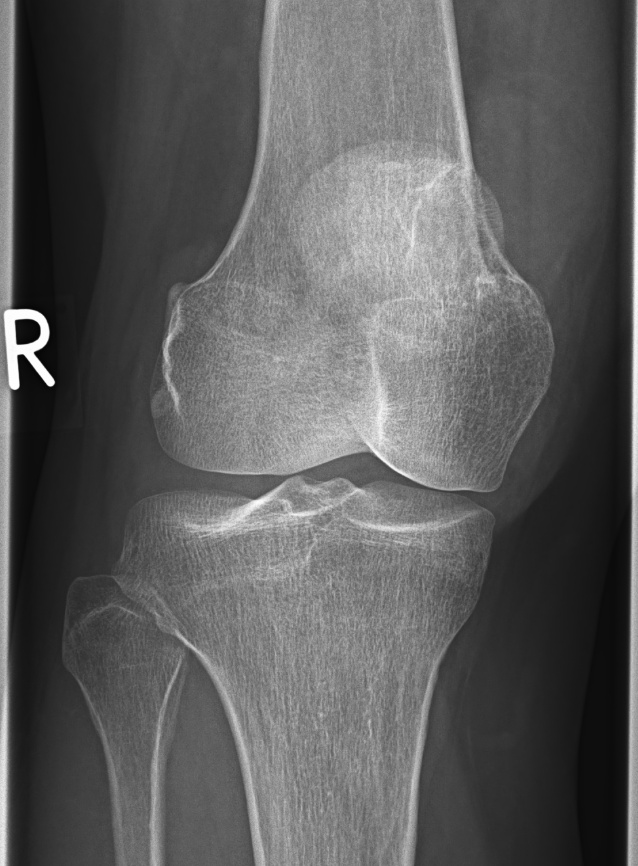

Ficha del catálogo
Tumor óseo de células gigantes
- Sistema
- Óseo
- Modalidad
- RX
- Región
- Epífisis de huesos largos
- Dificultad
- Avanzado
Tumor de comportamiento localmente agresivo que aparece en adultos jóvenes tras el cierre de las fisis, con predilección por la región alrededor de la rodilla y por el radio distal. Se caracteriza por una localización epifisaria excéntrica que llega hasta el hueso subcondral. Aunque es histológicamente benigno, recidiva con frecuencia y puede dar implantes pulmonares.
Técnica
Radiografía en dos proyecciones seguida de resonancia magnética para definir la extensión y la afectación articular antes del tratamiento.
Qué observar
- Lesión lítica excéntrica de localización epifisaria que alcanza el hueso subcondral
- Ausencia de borde esclerótico definido, con zona de transición estrecha pero no nítida
- Adelgazamiento y expansión cortical con posible ruptura focal
- Ausencia de matriz calcificada dentro de la lesión
- Aparición en pacientes con fisis ya cerradas
- Posibles niveles líquido-líquido por cambios quísticos secundarios
Hallazgos
Lesión lítica epifisaria excéntrica sin matriz ni esclerosis marginal, expansiva y en contacto con la superficie articular.
Perlas
La combinación de localización epifisaria, fisis cerradas y ausencia de borde esclerótico es muy sugestiva. Como puede metastatizar al pulmón pese a ser benigno, la estadificación incluye tomografía torácica.
Diagnóstico diferencial
- Quiste óseo aneurismático
- Metafisario, más expansivo y con niveles líquido-líquido dominantes.
- Condroblastoma
- Epifisario pero en pacientes con fisis abiertas y con matriz condral.
- Tumor pardo del hiperparatiroidismo
- Coexisten resorción subperióstica y alteraciones del calcio.
Simuladores
- Lesión lítica metastásica solitaria
- Quiste subcondral degenerativo grande
- Absceso intraóseo
Por modalidad
- RX
- Orienta el diagnóstico por localización y morfología
- RM
- Define extensión articular y componentes quísticos
- TC
- Valora la integridad cortical y el riesgo de fractura
Protocolo
Radiografía en dos planos, resonancia con contraste de la articulación afectada y tomografía de tórax en la estadificación.
Clasificación
Se gradúa según el comportamiento local, desde lesión bien contenida hasta lesión con ruptura cortical y componente de partes blandas.
Errores frecuentes
- Diagnosticarlo en un paciente con fisis abiertas sin considerar condroblastoma
- No solicitar estudio torácico por asumir benignidad completa
- Subestimar la extensión subcondral y comprometer la reconstrucción articular

tumor celulas gigantes epifisis litica excentrica rodilla radio distal localmente agresivo